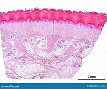

PIEL

- Como quizás ya has escuchado, la piel es el órgano más grande del cuerpo humano, cubriéndolo desde la cabeza hasta los dedos de los pies. Este órgano constituye aproximadamente del 8 al 20% de la masa corporal y tiene un área total de 1,6 a 1,8 m2 en los adultos. Está compuesto de tres capas principales: la epidermis, la dermis y la hipodermis, las cuales contienen diversas subcapas.

- Debido a las variaciones que existen entre persona y persona, el área total de la piel puede variar según la estatura y peso. La superficie total de la piel es un dato que por lo general se utiliza para determinar la dosis de diversos fármacos. Las funciones de la piel son varias pero podemos destacar la protección física, la termorregulación y la sensibilidad.
-
pagina principal